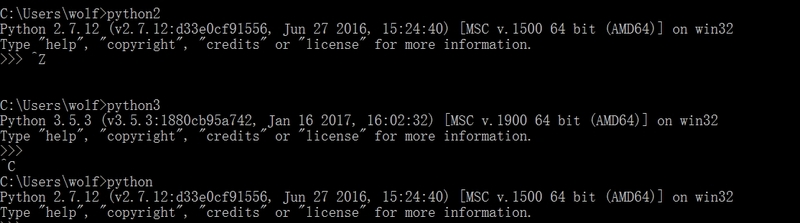

可能很多人一看到这个标题直接就关闭了,这么简单和low的问题有必要说出来吗?一看就知道是个Python的小白。如果你是这么想的话,那么就没有必要看下去了,因为对你来说也没有什么帮助。
这个问题,确实很简单,简单的不能再简单。但是在实际工作中确实会遇到。
实话说,对于经常在gentoo、archlinux这类版本上玩的人来说,完全可以不考虑这个问题。但是,你的同事或朋友却不一定与你一样。
在这里,我们要解决2个问题:
- 多版本pip共存问题
- 多版本Python共存问题
说到这里,可能会有人说直接用pyenv不就好了,省时又省力。但是,pyenv不支持Windows系统。
实话说,虽然你百度一下,确实有N篇文章说的头头是道,但是当你去实践的时候就会发现根本就是不行的。
多版本pip共存
在这里我们在一台已经安装了Python3.5.3的Windows的系统上安装Python2的版本。
安装完成后,我们切换到Python2安装目录下的Scripts目录下,将其中的pip.exe文件修改为pip27.exe或直接将其删除,然后我们运行如下的命令:
pip2 -V pip 8.1.1 from C:\Python27\lib\site-packages (python 2.7) pip -V pip 9.0.1 from C:\Python35\lib\site-packages (python 3.5)
可以看到,这样我们就解决了多版本pip共存的问题了。
多版本Python共存
下面我们来看多版本Python共存的问题。网上很多教程让我们把不同Python版本的解释器文件直接进行修改,结果Python版本是可以共存了,但是pip却无法使用了。
对于这种情况,我们有2种方式,1种是在多版本pip共存的情况下,使用如下的方式启动Python不同版本:
py -2 py -3
这样就分别启动了Python2和Python3。
实话说,这种方式对于处女座的人来说,觉得并不是很完美。下面我们来看1种在多版本pip共存情况下实现多版本Python共存的实现。
我们直接将各个版本中的Python解释器文件python.exe复制1份,然后分别修改为python2.exe和python3.exe。
这样我们就完成了版本共存的问题了,如下图所示:

在这里由于最后安装的是Python2版本,并且自动将其添加到环境变量中,因为默认输入Python时启动的是Python2。
当然,上述的问题只是其中的1种解决方式,如果套用数学的术语,只是所有解集中的1种。
对于Python这样的语言,如果只会1种方式,往往都是在打酱油的。一般情况下,同1个问题至少有2-3种的方式,选取其中最好的1种方式才是正道。